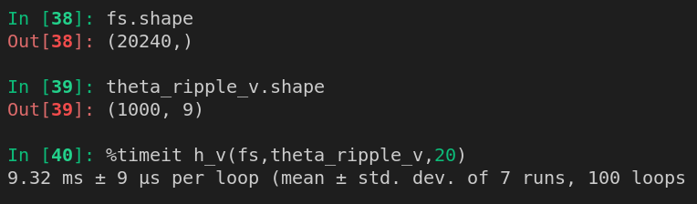

<section>
    <h2 class="header">My thoughts on SBI</h2>
</section>

<section>
    <h4 class="header">Is this really necessary?</h4>
</section>


<section>
    <h4 class="header">Jax - numpy on steroid</h4>
    <div class="column">
        <div class="row" style="justify-content: space-evenly;">
            
            <ol class="bright">
                <li>Autodiff</li>
                <li>JIT compilation</li>
                <li>Simple vectorization</li>
                <li>GPU with XLA</li>
            </ol>
        </div>
        <div class="row" style="justify-content: space-evenly;">
            
            
        </div>
    </div>
</section>

<section>
    <div class="row">
        <h4 class="header"> Ripple - GW model in Jax</h4>
        
    </div>
    <div class="column">
        
        <div class="row fragment">
            <span style="color: rgb(100,255,100); margin: 0;">\[ 10^3 \rightarrow 10^6  \textrm{calls}\]</span>
        </div>
    </div>
</section>

<section>
    <h4 class="header"> SBI is one of many tools</h4>
    <div class="column">
        <div class="row">
            <ol>
                <li class="fragment">Autodiff</li>
                <li class="fragment">GPU acceleration</li>
                <li class="fragment">Kernal fusion</li>
                <li class="fragment">Quantization</li>
                <li class="fragment">And many more techniques with their own tradeoffs</li>
            </ol>
        </div>
    </div>
</section>